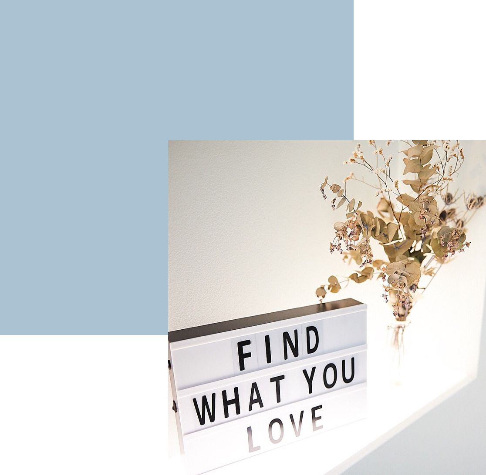
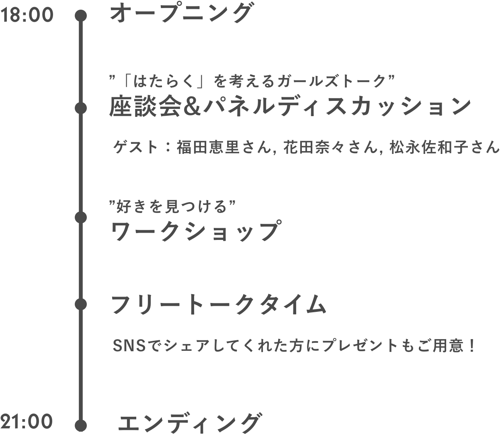
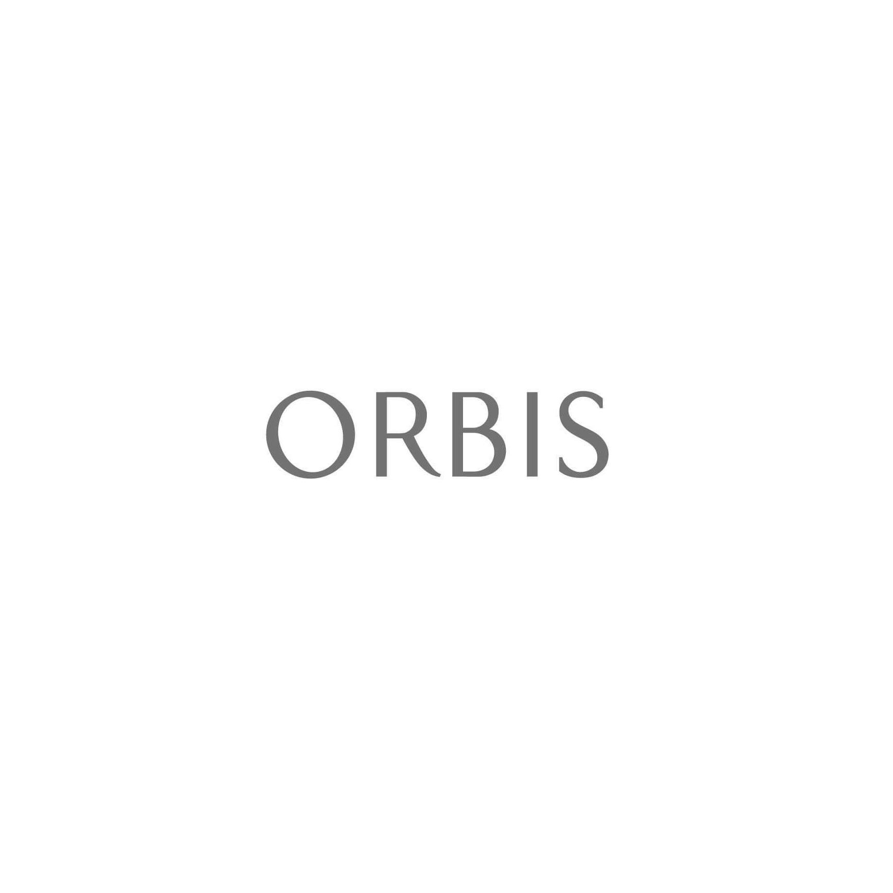
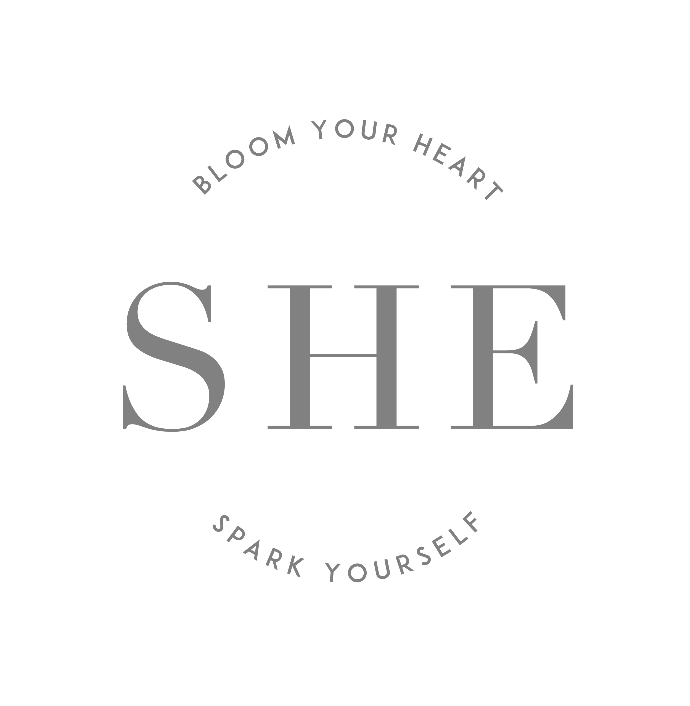

Find your SPARK.
あなたの好きなことは、なんですか？
女子にとって働くことが
特別でもなんでもなくなった今の時代。
「よくわかんないけど、とりあえず就活しないと。」
「３年生になったらインターンしなきゃでしょ。」
そんな家族や友達の言葉をよく聞くようになった。
私たちはただ焦って、不安になって、
「あれ？ 私どうしたいんだったっけ？」
名前をよく聞くところを受けて、ただなんとなく頑張って、
毎日来るメルマガに、ちょっと憂鬱になる、
そんなの、もうやめないか？
これからは、就活じゃなくて、
”わたしの好きなことを見つける活動”
それに、大学生活の貴重で勿体無くて大切な、
私たちの時間を使うんだ。
好きなことでキラキラ輝く、そんな１人になるんだ。
悩んでる場合じゃないから、話し合おう。
イマは短し、動けよ乙女！
About
イベント概要

女子大生がつくる、
女子大生のためのイベント
「ワクワクしながら仕事したい！」「好きを仕事にしたい！」「何かを成し遂げたい！」
と思うことはあるけれど、何からやればいいのやら、なかなか行動が起こせない…。
そんな女子大生に届けたい、女子の「はたらく」を考える21世紀最強のガールズイベントです。
「好きを仕事に」を実現しているゲストとの座談会や、
ワークショップを通して、
今日、あなたの “はじめの一歩“ を見つけよう。
女子の「好き」が詰まった最高にカワイイSHE Aoyamaで、
一歩を踏み出すあなたをお待ちしています。
Contents
コンテンツ
女子の「はたらく」を考える、
２つのコンテンツ
1. ”好き”を見つけるワークショップ
就活と合わせてよく聞く、「自己分析」というワード。
まずは少し、前向きな方向から考え始めませんか？
「私の大事にしたいものって何だっけ？」 答えにつながるヒントを探すワークショップです。
答えにつながるヒントを見つけませんか？
2. ”先輩”と語る座談会
好きなことで働く。楽しく仕事をする。それが単なる理想ではなくなってきたいま、
”何者でもないただの女の子”がどうやっていまの姿にたどり着いたのか。
今を輝いて生きる、先輩方にはたらくことについてお聞きします。
Guest
ゲスト情報
座談会には、いま「自分らしい働き方」を実践している先輩をゲストにお呼びします。

福田 恵里
Fukuda Eri
SHE取締役/CCO。
自分でアイデアを形にできる女性を増やしたいという想いから、
学生時代に女の子のためのWebデザイン講座「DesignGirls」を立ち上げ、
累計300人以上の初心者の女性が受講。
新卒でリクルートホールディングスに入り、
ゼクシィ/リクナビ等のアプリのUXに携わる。
2017年7月から独立し、株式会社SHEを設立。
Twitter: @eri_razapii

花田 奈々
Hanada Nana
SHE株式会社 コンテンツ企画担当。
学生時代よりwebメディアの立ち上げに編集部として携わる。
新卒ではIT企業にて営業を担当していたが、
SHEのビジョンに共感し2018年6月に正式ジョイン。
現在は、SHEとスタートアップwebメディア事業部とのパラレルキャリアを実践中。
Twitter: @hana25toma
Schedule
スケジュール
 Detail
開催概要
SHE Aoyama
住所
〒107-0062 東京都港区南青山３丁目７−２１
最寄り駅
表参道駅A4出口 徒歩5分
A4出口を出て右手の大通り(青山通り)を右方向にずっと進んでいくと、きらぼし銀行があります。きらぼし銀行を超えてすぐの右側に続く小道を入っていただき、200mほど進んでいただくと、K2という美容室が見えます。K2の向かい側にある小道を左に曲がり10mほど進むと右側にある、真っ白な一軒家が会場です。
Supported by
 